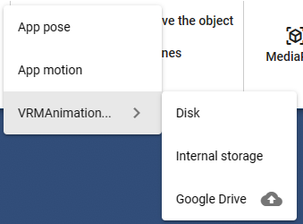
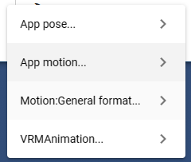

6.13.1.3. Model tab

There are buttons for functions related to 3D models.
- In Add (4 rows above, 3 rows below)
- Text:
Add text to the WebGL screen.
- Camera:
Add a camera to your WebGL screen. This will be the sub camera.
- Spotlight:
Add a spotlight to your WebGL screen.
- Basic shapes:
Add blank objects such as spheres, planes, and rectangles.
- Image in UI:
Add image as 2D to WebGL screen. This is not a 3D object.
- Effect:
Add effects to your WebGL screen.
- Point light:
Adds a light that illuminates a certain area of space on the WebGL screen.
- In Load
The
From File,Select from Google DriveandSample Datamenus are available.- From a file:
Read files directly from a PC or other device.
- Select from Google Drive:
A separate dialog will be displayed, allowing you to select and load the target file.
- Sample data:
You can use the model data provided on this app’s server.
- By each object
- VRM:
Load the VRoid (VRM) and load it.
- Object:
Open and load FBX, OBJ, etc.
- Image:
Load the image as a 3D object. After loading, it can be operated in the same way as FBX or Obj.
- Detailed information:
Displays information for the selected VRM. Doesn’t work outside VRM.
- In the Reset operation
- Open:
The previous
Listhas been replaced with this menu.- App pose, App motion
The pose/motion list dialog opens with each tab selected.
- VRMAnimation
Open from one of the following.
Terminal,Internal Storage
- Save:
Displays the pose save and motion save menu.
There is a submenu for each format. Click on each to select the save location and format.
- App pose / App motion
Terminal,Internal Storage,Google Drive- Motion: general format
The general format is
.anim.- VRMAnimation
Terminal,Internal Storage
- In the Reset operation
- reset position:
Resets the position of the selected 3D object to its initial position.
- reset rotation:
Resets the rotation of the selected 3D object to its initial angle.
- delete model:
Delete the selected 3D object from the app.
- reset all bones:
Resets all bones and IK positions and rotations of the whole body of the selected VRM. (return to T pose)
- others
- MediaPipe:
Use the pose tracking function by AI.
- VRoid Hub
- Connect:
Start connecting to VRoid Hub. After logging in to VRoid Hub, a connection confirmation page will be displayed.
- Log out:
Disconnects this app from VRoid Hub and cancels your login status.
- List:
Clicking on one of them will display the model selection screen.
My models
My favorites
Recommended models by staff